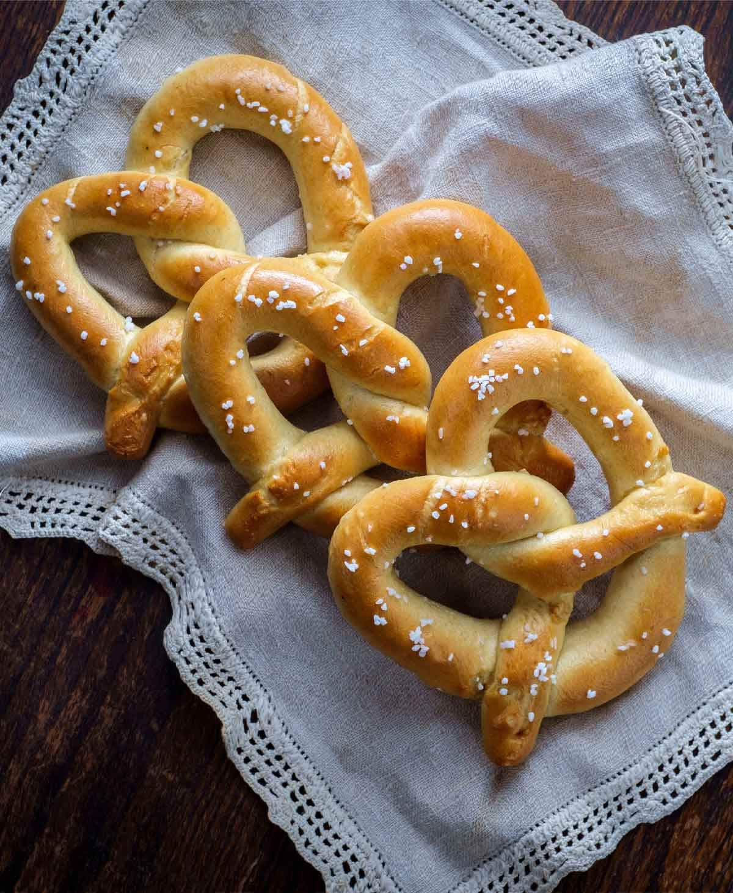

Pretzels

Homemade soft pretzels are irresistible—the aroma alone will have everyone
flocking to the kitchen. A soft crust with a bit of chewiness, a fluffy
interior, and a sprinkle of salt make these disappear fast.
Ingredients
-
4 1/2 cups unbleached all-purpose flour plus additional for kneading
- One (1/4-ounce package or 2 1/4 teaspoons) instant yeast
- 2 tablespoons sugar
- 2 teaspoons kosher salt
- 1 1/2 cups warm water
- 4 tablespoons (2 oz) unsalted butter, melted
- 1 large egg yolk lightly beaten
- 1 large egg white well beaten with 1 tablespoon water
- Pretzel (coarse) salt as needed
Steps
-
Preheat the oven to 450°F (230°C) Do not use a convection oven for this
recipe.
-
In the bowl of a standing mixer fitted with the paddle attachment,
combine the flour, yeast, sugar, and salt, and stir to mix; add the
water, butter, and egg yolk, and mix on low until the dough pulls away
from the side of the bowl.
-
Fit the mixer with the dough hook and knead the dough at the lowest
speed until the dough is smooth and elastic, about 8 minutes, adding
some or all of the remaining flour as needed. Cover with plastic wrap
lightly sprayed with cooking spray and let rise in a warm place until
doubled, about 1 hour.
-
Turn out the pretzel dough on a lightly floured board and knead briefly,
about 1 minute. Cut the dough into twelve equal-size pieces. Roll out
each dough piece into a 24-inch-long rope. Make a U shape with the rope.
Holding the ends of the rope, cross them over each other and press the
ends down onto the bottom of the U to seal, forming a “pretzel shape.”
For small pretzels, cut the dough into 24 equal-size pieces. Roll out
each dough piece into a 12-inch-long rope and shape the pretzels as
directed.
-
Gently place each pretzel on a parchment paper–lined baking sheet (two
pans). Brush the tops lightly with the egg white mixture. Sprinkle each
pretzel with 1/2 teaspoon of coarse salt, or to taste. Bake in the
preheated oven for 14 to 16 minutes, or until the pretzels are browned
and firm. Transfer to a cooling rack and let cool for 5 to 10 minutes
before serving.